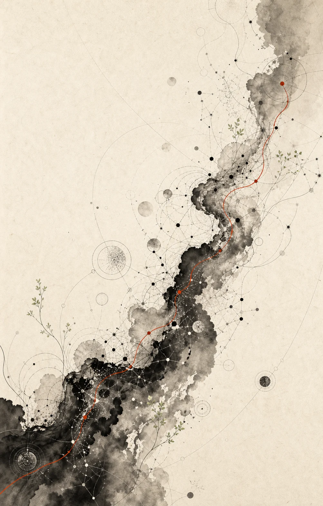
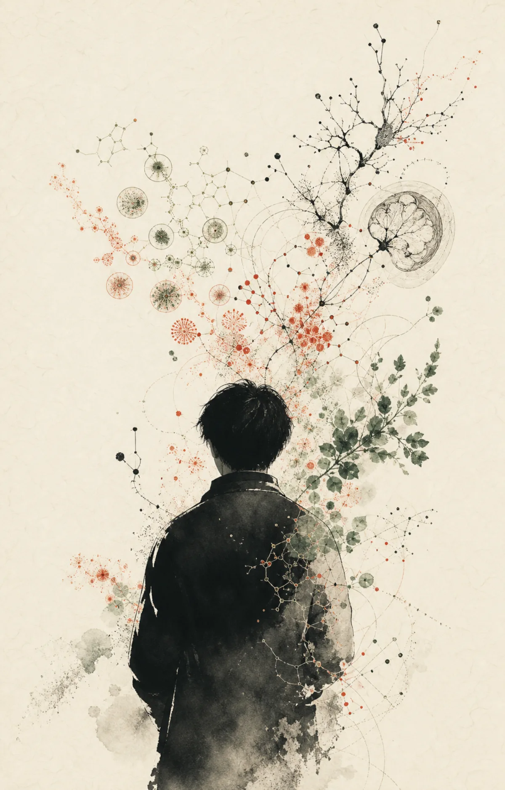
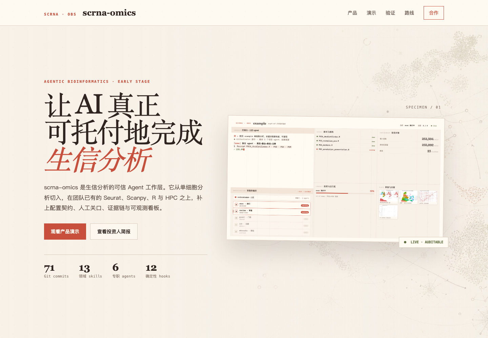
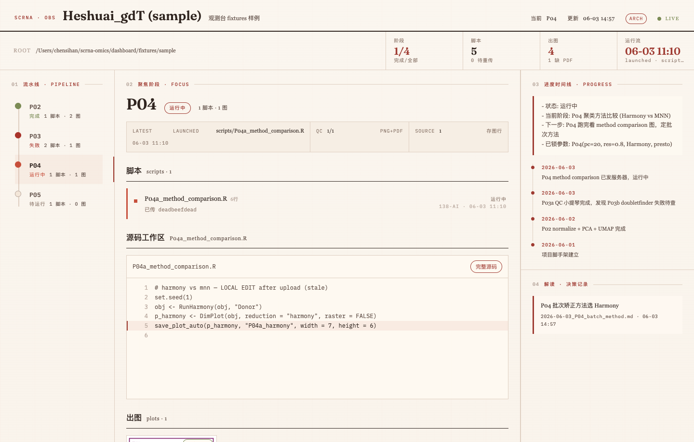

问题 / QUESTION
先看判断最容易断在哪。
单细胞分析并不缺脚本，缺的是为什么这样做、出了问题如何回退，以及谁来复核。
研究现场 · γδT 细胞与免疫衰老MEDICINE · RESEARCH · PRODUCT
BUILD LOG / FROM QUESTION TO PRODUCT
重复操作、判断断点、复核困难，我会先在自己的分析里解决。 方法跑得通，再整理成别人可以接手的流程。
问题 / QUESTION
单细胞分析并不缺脚本，缺的是为什么这样做、出了问题如何回退，以及谁来复核。
研究现场 · γδT 细胞与免疫衰老实验 / TEST
两个研究项目里的脚本、Agent 和检查点，都是在一次次返工中改出来的。
2 个研究项目 · 边分析边修正系统 / SYSTEM
13 个领域 Skills、6 类 Agents 和 12 个 Hooks 分别负责分析步骤、任务执行、过程留档和质量检查。
关键节点由分析员确认 · 操作过程自动留档产品 / PRODUCT
scrna-omics 是目前完成度最高的一次。后来，我也把这套工作方法用在观点调研和个人成长产品里。
科研理解 × 全栈交付 × 产品判断PERSONAL PATH
WHY THIS BUILDER

ONE CONTINUOUS PATH
陈思翰
暨南大学 · 口腔医学
行以践智，目以鉴真。
我曾在全英文环境里接受一年临床医学培养，目前就读暨南大学 2025 级口腔医学专业。动手之前先弄清对象、风险和使用场景，是那时留下的习惯。
我在系统生物医学系承担核心生信分析，研究 γδT 细胞的免疫衰老，同时参与实验设计和多组学证据整理。
我能独立完成 scRNA-seq、scTCR-seq、细胞通讯和轨迹分析，也负责研究服务器环境。目前有 3 篇 SCI 论文在投，并牵头推进 2 个科研项目。
做完几轮分析后，我开始把经验写进 Skills、Agents 和 Hooks。少做重复操作，也让每次判断有记录可查。
SIGNATURE CROSSOVER
RESEARCH × PRODUCT
单细胞分析的方法、判断和复核记录，放在同一套工作流里。
我为常用单细胞分析环节写了 13 个领域 Skills、6 个专业 Agents 和 12 个确定性 Hooks，也接入了服务器执行、决策记录和图表复核。关键节点仍由分析员确认。
这套系统已用于 2 个研究项目。我一边用它完成分析，一边根据复核意见修正工作流。


SELECTED PRODUCTS
INDEPENDENT BUILDS / TEAM VENTURE
点开项目，看它解决什么、我做了哪些部分，以及现在的界面。
MEDIA / COMMUNITY
RESEARCH AS PUBLIC COMMUNICATION
本硕博三无
口腔医学生｜AI 科研｜产品开发｜职业探索
记录一个非典型医学生的成长历程，也在微信运营两个近 500 人社群。
PUBLIC RESEARCH PRODUCT
EXPERIENCE / SKILLS
MEDICAL TRAINING · RESEARCH DELIVERY · PRODUCT BUILDING
各类生信分析 ＞ 免疫学实验设计 ＞ 文献爬取、计量与知识库构建。
R · Python · Seurat · Scanpy · scRNA-seq · scTCR-seq做过 Android 开发、后端架构、网站，也维护过研究服务器。
HTML/CSS/JS · React · Capacitor · Node.js · FastAPI · Linux我会设计多智能体工作流、长期记忆、工具调用和模型路由，也会用 Hooks 给关键步骤加上确定性检查。
Multi-agent · Hooks · Memory · Tool Use · Model Routing我做需求调研、产品原型和 UI，也负责内容发布、用户反馈与社群运营。
Research · Product Strategy · Content · CommunityEDUCATION / RESEARCH
2025 级；曾接受一年全英文临床医学培养。2024 至今参与 γδT 细胞免疫衰老和多组学研究，承担核心生信分析。
RESEARCH / OPEN SOURCE
CODE AS RESEARCH EVIDENCE
把 Seurat 聚类结果导出成模型能读的 JSON。独立开发 · 细胞注释与复核
↗ SINGLE-CELL RESEARCHγδT cells in psoriasis67,742 个细胞、8 个亚群的银屑病 γδT 分析。研究项目 · 公开复现脚本与结果
↗ RESEARCH TOOLPaper4AI把论文网页整理成干净的 Markdown。独立开发 · Chrome 扩展
↗ KNOWLEDGE TOOLAsk LLM & Link把 Obsidian 里选中的内容交给模型，回答再保存成一条链接笔记。独立开发 · Obsidian 插件
↗ MEDICAL EDUCATION儿童牙外伤指南把牙外伤应急处理整理成儿童和家长可以跟着读的互动页。独立开发 · 医学科普
↗ CLINICAL TOOL麻醉核对表按流程整理麻醉前后的核对项。独立开发 · 临床流程工具
↗ CONTENT TOOL切图工坊在浏览器中分割长图，并按常用内容平台的尺寸导出。独立开发 · 纯前端
↗ MODEL INFRASTRUCTUREClaude Adapter在 OpenAI 与 Anthropic Messages API 之间转换请求和响应格式。独立开发 · Python / Docker
↗ADVENTUREX / RESEARCH PRODUCT COLLABORATION